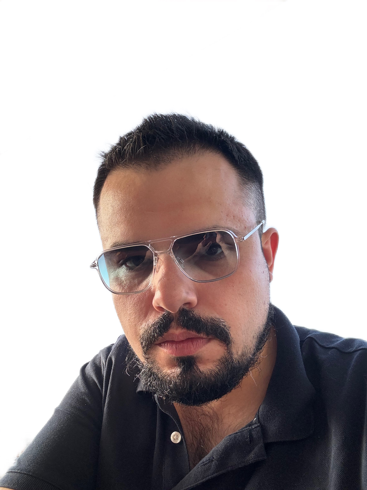

Curriculum vitae
Name: Andrey Kabakov

Date of birth:1991-12-01
Education:
LL.M, Novosibirsk State University, Department of Economics (2009-2014)
Additional courses
- Siberian Institute of International Relations and Regional Studies, English and Diplomatic Protocol and
Etiquette courses (2008-2009)
- Tel-Ran, Rehovot (2024 - Present) Learn more
Experience:
- Fine Books (2011-2013), Founder
- Siberian Center for Technical Diagnostics and Industrial Safety Expertise (2014-2015), Lawyer
- Avantage Patisserie, Holon (2016-2023) - Night Shift Manager
- Teva Bari (2024 - Present) - Warehouse worker
Skills:
- Possess exceptional communication skills, ability to apply knowledge effectively, resilience under stress,
commitment to rules and results-driven
- Skilled in heading teams towards a common goal within tight deadlines and sometimes limited resources
- Quick learner: Fluent in three languages, following the Bologna process requirements, self-taught Latin in a
matter of evenings